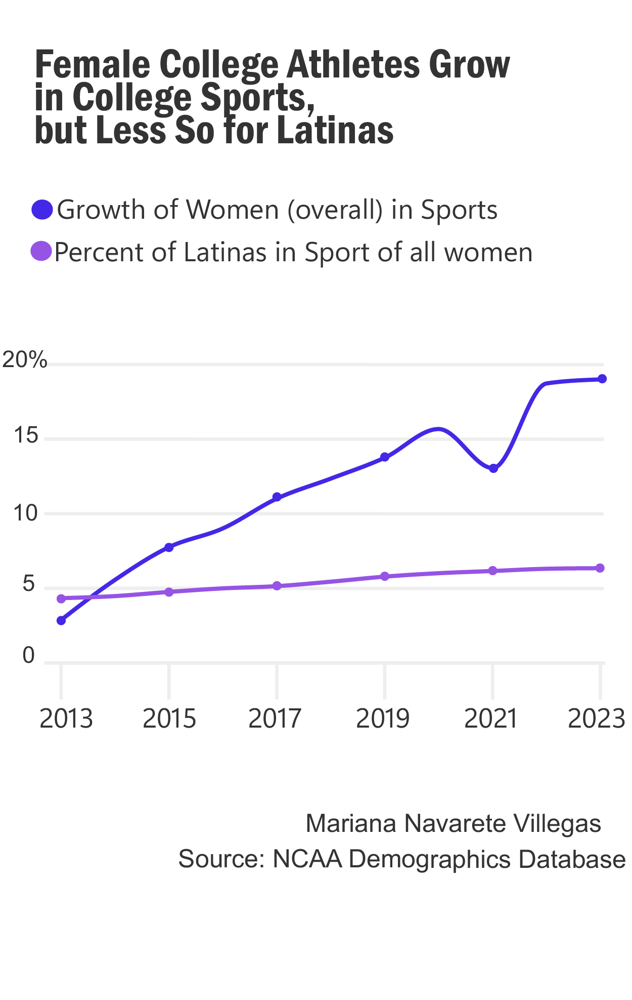

In recent years, there has been a notable surge in female participation in collegiate sports in the country, marking significant progress towards gender equality in athletics. However, when examining the demographic landscape, a concerning trend emerges: the underrepresentation of Latina/Hispanic women in collegiate athletics relative to their overall growth. This discrepancy raises critical questions regarding social class, inequality, and access that warrant careful consideration.
One primary factor contributing to the growth of women in college sports is increased awareness and advocacy for gender equality in athletics. Title IX, enacted in 1972, has played a pivotal role by prohibiting sex-based discrimination in educational programs, including sports. As a result, opportunities for female athletes have expanded, leading to greater participation and visibility.

Nonethless, the disparities among ethnic groups, particularly Latinas/Hispanics, shed light on deeper-rooted issues of socioeconomic status and access to resources. Limited access to quality sports programs, financial constraints, and cultural barriers can hinder Latina/Hispanic women's involvement in college athletics. Socioeconomic disparities often intersect with ethnic identity, creating additional barriers for individuals from marginalized communities.
Addressing this disparity requires multifaceted solutions that address systemic inequalities. Investing in outreach programs, providing financial assistance, and fostering inclusive environments are crucial steps towards promoting diversity and representation in college sports. Moreover, recognizing the intersectionality of race, ethnicity, and socioeconomic status is essential for implementing equitable policies and fostering a more inclusive athletic landscape.